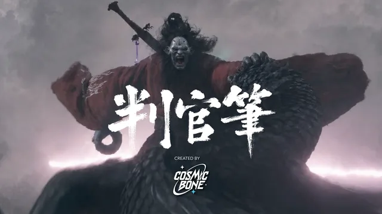
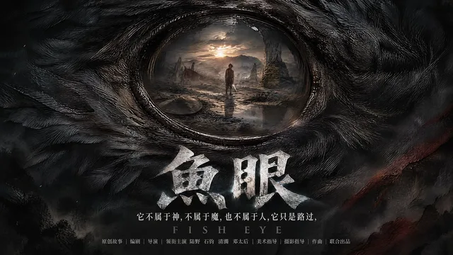
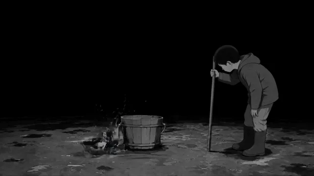
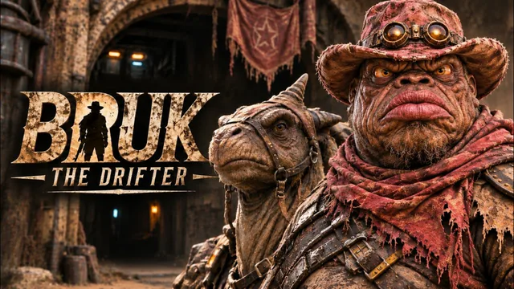

同样值得看原片封面仙侠奇幻
判官笔·钟馗前传
「cosmicbone_hk」发布的 AI 奇幻短片《判官笔·钟馗前传》第一集，全长 8 分…
cosmicbone_hk第 01 集 / 08:07
前往哔哩哔哩观看免费原片 · 在原平台播放橘生梦厂 · AI 短片编选
102 部筛过的 AI 短片，每部都写清楚为什么值得看。
每周一份编辑榜单，前往原平台免费观看。
上一周首发的新作 · 本周编选 · 每周一更新

首发 · 哔哩哔哩
一个人从零做起的仙魔题材 AI 动画，片尾的制作时间线本身就是看点。

首发 · 哔哩哔哩
手绘打底、AI 补足的原创动画短片，适合想看两种手法怎么接在一起的观众。
首发 · 哔哩哔哩
以战争和一个被写错的名字为题，十来分钟的短片，情绪集中。
首发 · 哔哩哔哩
巨型异兽与人类防线的对抗场面，篇幅不长，看视效正好。
首发 · 哔哩哔哩补选
丛林求生与巨兽围猎套得很紧，最后那阵鼓声把「救星」也拉回未知的一侧。
每周一更新，本期收录上一周（11.09—11.15）首发的 5 部作品，首推《最后的杂耍师》见页首，其余 4 部按首发日期排列，共 54 分 02 秒；末尾 1 部补选自片库，标「补选」，不是上一周首发的新作。
本周推荐之外，最近收录的九部。
共 102 部 · 首页收录 9 部
 免费精选原片封面
免费精选原片封面
「上分吧Pt」发布的 AI 原创短片，11 分 19 秒，2026 年 11 月 18 日发布。原页简介自述：这是一部融合古装奇幻、爱情与轻喜剧的 AI 短片，故事从云海宫阙与人间长安展开，龙族身世、命运暗线与错位的情感关系交织；从飞龙、麒麟到街巷烟火，再到现代都市的回响，尝试用轻快的对白与场景反差，讲述一段跨越时空的相遇。原页注明「影像及封面包含 AI 生成内容」，标签为古装、爱情、原创、AI、短片、穿越、轻喜剧、天宫。
古装奇幻与轻喜剧的混合体，云海宫阙和人间长安两条场景线交替，龙族身世是埋在底下的暗线。
「妄鱼1114」发布的 AI 短片，21 分 30 秒，2026 年 10 月 3 日发布。原页简介：阴司管理局负责人孟小冷因为盖错章，把原本该有大功德的小神仙投胎到 2500 年一个「797 牛马」身上；下凡通道被堵，他只能被迫打入十八层地狱，再经特殊通道下凡，去救这个叫张小凡的打工人。作者在简介里说明这是边想边做的作品，原计划五分钟，为讲完故事拉长到 21 分钟，导出二十多次、耗时近两周，也直言「剧情跟画面可能不是很完善」。原页标签为 科幻、电影、未来、ai影视。
把阴司的公文流程和 2500 年的打工人生拼在一处，错盖一个章就改写一个人的命，黑色幽默压在底下。
作者爱神北海在简介里自述本片「全程就是一个人加一台电脑」完成，画面由 AI 视频生成与图片生成工具制作，片中角色资产与音色资产均为 AI 文生，并声明未使用真人图像与音频。本集是系列第 01 集：小伙坠入合欢浴池，偶然间来到米国，一番闹腾之后开始他在异国他乡的宗门建设。原页标签：原创、奇幻、修仙、AI电影、AI短片。
一个人一台电脑做出来的修仙题材 AI 短剧开篇，把宗门搬到海外背景，适合想看 AI 系列剧怎么起头的观众。
第 01 集
「闲鱼杰克」制作的 AI 国风志怪短剧，全长 9 分 16 秒，2026 年 11 月 16 日发布。作者在原页简介里写明「本视频全程由 Minimax H3 生成」，并说因为非常喜欢动画《怪化猫》，于是试着做了一部「国产怪化狐」。原页只给了这两句创作说明，没有展开剧情与人物设定。
直奔《怪化猫》那种妖异志怪气质，全片由 Minimax H3 生成。
「P-P-P-Promenade」自编自导的原创 AI 科幻短片，10 分 56 秒，2026 年 11 月 16 日发布。故事发生在礼崩乐坏、军阀林立的后世界大战世界：靠拆卖旧时代军火为生的拾荒者意外触发机甲防御机制，被锁死在驾驶舱里；那具钢铁坟墓在跨越千年的演化中变成孕育新生的摇篮，大自然接管了重工业废墟，把冰冷的机器智能同化为微型雨林的发光心脏。作者写下的题眼是「这是最冰冷的钢铁废墟，但生命依然会找到出路」。分工：导演、剧本、空间设计为作者本人；关键帧与资产用 Lib Image 2.5 Pro，动态与延时镜头用 Wan3.0，剪辑调色在剪映完成。作者声明本片为非商业 AI 影像实验，配乐取自 Levi Stoker 与《尼尔：机械纪元》原声，版权归原作者。
机甲废墟里长出一片微型雨林，设定、镜头与美术都收得很紧。

免费精选原片封面「Aiworlddream」发布的英文科幻西部短片，11 分 25 秒，2026 年 11 月 12 日发布，标题自带 #ai 标注。原页简介：在被遗忘的外星边疆，一位父亲为寻找失踪的女儿不惜一切——漂流者 BRUK 带着一把旧左轮和一枚神秘的追踪装置，穿越遍布神秘信号、冷酷猎手与怪异生物的荒漠世界。一段奇怪的追踪信号把他引向废弃洞穴深处，那里藏着可能指向女儿下落的线索，也让他越走越危险。作品自我定位为关于生存、牺牲与父爱的无声电影化科幻西部冒险。
无声科幻西部，外星荒漠与独行父亲的线索，基本靠画面和音效叙事。
「未竟AIGC」发布的原创 AI 奇幻短片，20 分 32 秒，2026 年 10 月 3 日发布，原页简介自我标注为「《禁地：母亲的契约》｜原创 AI 奇幻短片」。原页剧情简介：她自愿接受诅咒，从此被困禁地，守着一个再见女儿的念想，等了整整十五年；直到女儿站在面前，看着她陌生的模样，轻轻喊了一声「妈妈」，这十五年的苦，她终于觉得值得了。
一部关于母亲十五年守候的 AI 奇幻短片，诅咒、禁地与重逢是原页给出的全部线索。
「梅头脑没烦恼」发布的 AI 微电影，14 分 57 秒，2026 年 11 月 4 日发布。原页标语：「这座城市什么都免费，除了你的心」。原页简介是作者自述：这是他作为 AI 小白的第一部短片，原创剧本、原创歌词，自认技术还有些粗糙，希望做出有故事、有内容、有画面的作品。原页未提供剧情梗概。
作者的 AI 短片处女作，原创剧本与歌词，城市寓言式的开场标语比剧情透露得更多。
原页中英双语简介：冰封的北方，猎人 Alec 追捕一头悬赏巨额的稀有白狼，白狼却变成最后的霜裔精灵之一 Alaia；一桩简单的活计变成穿越怪物森林、古老遗迹与无法之地边境小镇的凶险旅程。两人起初是敌人，互相救下性命之后，Alec 不再只把她当作赏金。她的血能治愈致命伤，一位痴迷永生的腐化主教因此追猎她的族人；黑骑士掳走 Alaia、杀死猎人忠实的猫头鹰熊后，垂死猎人体内的霜血觉醒。
黑暗奇幻狼人题材的 AI 动画，世界观、角色与反派动机都写得完整。
首页只放最近收录的九部，余下的作品都在完整片库里按题材、来源、评分筛选。
去完整片库搜索 / 筛选原片在作者发布的平台观看，可能需要登录原平台。
推荐一部好作品为一个好故事，买一张小票。
从公开作品里，找到想继续关注的创作者。
为一部经过审片的完整 AI 电影买单。
尚未开放真实购票；上面的按钮走演示商品与模拟支付，在本地服务生成演示订单，不扣款。
当前免费作品在原平台观看。未来购票解锁本站授权正片，购前展示价格、授权期和观看范围。我是创作者
已购影片与授权状态
演示订单由本地服务记录（模拟支付，不扣款），换设备登录可恢复查询；授权放映未接入。以下状态覆盖「未登录 → 未购买 → 支付中 → 确认中 → 已购有效 → 退款／到期／下架」，不收任何费用，也不产生真实权益。
创作者发行
面向具备完整故事与视听完成度的原创 AI 电影。未来通过创作者工作台投稿、管理作品，并查看每笔有效订单产生的收益。
创作者工作台尚未开放；当前可通过邮箱交流作品合作。
交流作品合作提交完整成片、试看、作品物料与授权资料。
核实故事、画面、声音和完成度，再确认价格与放映授权期。
每笔有效订单按约定比例计入创作者收益，退款与结算状态单独列明。
尚未开放创作者发布、收款或收益结算。分成比例与结算周期将在开放前明确。
热度帮助发现，质量决定收录。
关注热门，也给高质量的新作留位置。
粉丝多少，不是作品进入片库的门槛。
有明确的想法，让画面表达一件值得说的事。
构图、光影、连续性与剪辑，共同服务于作品。
按作品类型看声音、节奏与整体表达，不只看一张漂亮截图。
橘生梦厂做的是编选：从每天冒出来的 AI 电影与短片里，挑出值得看的，写清楚为什么。
片源都在原平台免费公开。这里只做介绍与索引，观看请前往原作页面。如果你是创作者，希望作品被收录或撤下，写信给我们。
版权归创作者与原平台所有。当前提供索引与介绍，不提供视频下载或转存；未来站内放映需取得相应作品授权。
封面取自作品在原平台发布的官方物料，仅用于识别与介绍，官方信息以原平台为准。来源与评分信息以实际核实情况为准。如你是权利人且不希望作品被收录，请发邮件至 highstrith@gmail.com，我们会在 48 小时内下架相关内容。